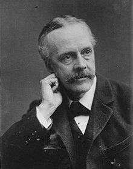

Date et Auteur
La déclaration a été publiée le 2 novembre 1917 pendant la Première Guerre mondiale et a été rédigée par Arthur Balfour, alors secrétaire aux Affaires étrangères du Royaume-Uni.
Arthur James Balfour (25 juillet 1848 - 19 mars 1930), 1er comte de Balfour, homme d'État, Premier ministre du Royaume-Uni et chef du parti conservateur, célèbre pour son action en tant que ministre des Affaires étrangères pendant la Première Guerre mondiale.

Destinataire
La déclaration était adressée à Lord Rothschild, un dirigeant de la communauté juive britannique.
Soutien au Foyer National Juif
La déclaration exprimait le soutien du gouvernement britannique à l'établissement d'un "foyer national pour le peuple juif "en Palestine.La déclaration Balfour a été saluée par de nombreux Juifs qui considéraient cela comme un soutien officiel à l'idée d'un foyer national juif en Palestine. Cependant, elle a également été critiquée par les Arabes de la région et a été perçue comme une trahison de la part des Britanniques par certains, car elle semblait promettre un territoire qui, à l'époque, était majoritairement peuplé d'Arabes.
Facilitation des Efforts
Le gouvernement britannique s'engageait à utiliser tous ses efforts pour faciliter la réalisation de cet objectif.L'idée derrière la déclaration était de mobiliser le soutien des Juifs, en particulier dans les États-Unis et la Russie, pour gagner leur appui en faveur des Alliés pendant la Première Guerre mondiale. Elle a également été influencée par les idées sionistes, qui prônaient l'établissement d'un État juif en Palestine.
Ainsi, on pourrait dire que la Déclaration Balfour visait à faciliter les efforts du mouvement sioniste en fournissant un soutien officiel et politique de la part d'une puissance mondiale, à savoir la Grande-Bretagne. Cependant, la déclaration a également été source de tensions entre les communautés juive et arabe en Palestine, car elle a promis le même territoire à deux groupes différents, ce qui a contribué aux conflits ultérieurs dans la région.
Protection des Droits
Les questions relatives aux droits, à l'égalité et à la souveraineté ont été au centre des tensions entre les communautés juive et arabe en Palestine au cours du mandat britannique. Les Palestiniens arabes considéraient que la déclaration Balfour favorisait les droits des Juifs au détriment de leurs propres droits et aspirations nationales.
Il est important de noter que les débats sur les droits et la justice dans le contexte de la déclaration Balfour et de la création de l'État d'Israël sont complexes et multifacettes, et ils ont été au cœur du conflit Palestino-Israélien qui perdure jusqu'à nos jours. Les interprétations et les opinions sur la question des droits varient en fonction des perspectives historiques, politiques et culturelles des différentes parties prenantes dans la région..